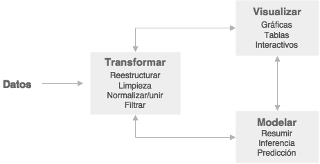
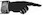

Chapter 2 Introducción a R y al paquete ggplot2
¿Qué es R?
- R es un lenguaje de programación y un ambiente de cómputo estadístico
- R es software libre (no dice qué puedes o no hacer con el software), de código abierto (todo el código de R se puede inspeccionar - y se inspecciona).
- Cuando instalamos R, instala la base de R. Mucha de la funcionalidad adicional está en paquetes (conjunto de funciones y datos documentados) que la comunidad contribuye.
¿Cómo entender R?
- Hay una sesión de R corriendo. La consola de R es la interfaz entre R y nosotros.
- En la sesión hay objetos. Todo en R es un objeto: vectores, tablas, funciones, etc.
- Operamos aplicando funciones a los objetos y creando nuevos objetos.
¿Por qué R?
- R funciona en casi todas las plataformas (Mac, Windows, Linux e incluso en Playstation 3).
- R es un lenguaje de programación completo, permite desarrollo de DSLs.
- R promueve la investigación reproducible.
- R está actualizado gracias a que tiene una activa comunidad. Solo en CRAN hay cerca de \(10,000\) paquetes (funcionalidad adicional de R creadas creada por la comunidad).
- R se puede combinar con otras herramientas.
- R tiene capacidades gráficas muy sofisticadas.
- R es popular (Revolutions blog).
2.1 R: primeros pasos
Para comenzar se debe descargar R, esta descarga incluye R básico y un editor de textos para escribir código. Después de descargar R se recomienda descargar RStudio (gratis y libre).
Rstudio es un ambiente de desarrollo integrado para R: incluye una consola, un editor de texto y un conjunto de herramientas para administrar el espacio de trabajo cuando se utiliza R.
Algunos shortcuts útiles en RStudio son:
En el editor
- command/ctrl + enter: enviar código a la consola
- ctrl + 2: mover el cursor a la consola
En la consola
- flecha hacia arriba: recuperar comandos pasados
- ctrl + flecha hacia arriba: búsqueda en los comandos
- ctrl + 1: mover el cursor al editor
R en análisis de datos
El estándar científico para contestar preguntas o tomar decisiones es uno que se basa en el análisis de datos. Aquí consideramos técnicas cuantitativas: recolectar, organizar, entender, interpretar y extraer información de colecciones de datos predominantemente numéricos. Todas estas tareas son partes del análisis de datos, cuyo proceso podría resumirse con el siguiente diagrama:

Es importante la forma en que nos movemos dentro de estos procesos en el análisis de datos y en este curso buscamos dar herramientas para facilitar cumplir los siguientes principios:
Reproducibilidad. Debe ser posible reproducir el análisis en todos sus pasos, en cualquier momento.
Claridad. Los pasos del análisis deben estar documentados apropiadamente, de manera que las decisiones importantes puedan ser entendidas y explicadas claramente.
Dedicaremos las primeras sesiones a aprender herramientas básicas para poder movernos agilmente a lo largo de las etapas de análisis utilizando R y nos enfocaremos en los paquetes que forman parte del tidyverse.
Paquetes y el Tidyverse
La mejor manera de usar R para análisis de datos es aprovechando la gran
cantidad de paquetes que aportan funcionalidad adicional. Desde
Rstudio podemos instalar paquetes (Tools - > Install packages o usar la
función install.packages("nombre_paquete")). Una vez instalados, podemos
cargarlos a nuestra sesión de R mediante library. Por ejemplo, para cargar el
paquete readr hacemos:
# print(read_csv)
# Error in print(read_csv) : object 'read_csv' not found
library(tidyverse)
print(read_csv)## function (file, col_names = TRUE, col_types = NULL, col_select = NULL,
## id = NULL, locale = default_locale(), na = c("", "NA"), quoted_na = TRUE,
## quote = "\"", comment = "", trim_ws = TRUE, skip = 0, n_max = Inf,
## guess_max = min(1000, n_max), name_repair = "unique", num_threads = readr_threads(),
## progress = show_progress(), show_col_types = should_show_types(),
## skip_empty_rows = TRUE, lazy = should_read_lazy())
## {
## if (edition_first()) {
## tokenizer <- tokenizer_csv(na = na, quoted_na = quoted_na,
## quote = quote, comment = comment, trim_ws = trim_ws,
## skip_empty_rows = skip_empty_rows)
## return(read_delimited(file, tokenizer, col_names = col_names,
## col_types = col_types, locale = locale, skip = skip,
## skip_empty_rows = skip_empty_rows, comment = comment,
## n_max = n_max, guess_max = guess_max, progress = progress,
## show_col_types = show_col_types))
## }
## if (!missing(quoted_na)) {
## lifecycle::deprecate_soft("2.0.0", "readr::read_csv(quoted_na = )")
## }
## vroom::vroom(file, delim = ",", col_names = col_names, col_types = col_types,
## col_select = {
## {
## col_select
## }
## }, id = id, .name_repair = name_repair, skip = skip,
## n_max = n_max, na = na, quote = quote, comment = comment,
## skip_empty_rows = skip_empty_rows, trim_ws = trim_ws,
## escape_double = TRUE, escape_backslash = FALSE, locale = locale,
## guess_max = guess_max, show_col_types = show_col_types,
## progress = progress, altrep = lazy, num_threads = num_threads)
## }
## <bytecode: 0x7fa62d2c1040>
## <environment: namespace:readr>read_csv es una función que aporta el paquete readr, que a su vez está incluido en el
tidyverse.
Los paquetes se instalan una sola vez, sin embargo, se deben cargar
(ejecutar library(tidyverse)) en cada sesión de R que los ocupemos.
En estas notas utilizaremos la colección de paquetes incluídos en el tidyverse. Estos paquetes de R están diseñados para ciencia de datos, y para funcionar juntos como parte de un flujo de trabajo.
La siguiente imagen tomada de Why the tidyverse (Joseph Rickert) indica que paquetes del tidyverse se utilizan para cada etapa del análisis de datos.
knitr::include_graphics("imagenes/tidyverse.png")
Recursos
Existen muchos recursos gratuitos para aprender R, y resolver nuestras dudas, enlistamos algunos.
- Buscar ayuda: Google, StackOverflow.
- Para aprender más sobre un paquete o una función pueden visitar Rdocumentation.org.
- La referencia principal de estas notas es el libro R for Data Science
de Hadley Wickham.
- Para aprender los comandos básicos de R Try R
y Datacamp cuentan con excelentes cursos
interactivos.
- Para aprender programación avanzada en R, el libro gratuito
Advanced R de Hadley Wickham es una buena referencia.
En particular es conveniente leer la guía de estilo (para todos: principiantes, intermedios y avanzados).
- Para mantenerse al tanto de las noticias de la comunidad de R pueden visitar
R-bloggers.
- Más del tidyverse: Why the tidyverse
- Para aprovechar la funcionalidad de RStudio.
2.2 Visualización con ggplot2
Utilizaremos el paquete ggplot2, fue desarrollado por Hadley Wickham y es
una implementación de la gramática de las gráficas (wilkinson2005?).
Gráficas de dispersión
library(ggplot2) # Cargamos el paquete en nuestra sesiónUsaremos el conjunto de datos mpg que se incluye en R, puedes encontrar
información de esta base de datos tecleando ?mpg.
data(mpg)
?mpg
glimpse(mpg)## Rows: 234
## Columns: 11
## $ manufacturer <chr> "audi", "audi", "audi", "audi", "audi", "audi", "audi", "…
## $ model <chr> "a4", "a4", "a4", "a4", "a4", "a4", "a4", "a4 quattro", "…
## $ displ <dbl> 1.8, 1.8, 2.0, 2.0, 2.8, 2.8, 3.1, 1.8, 1.8, 2.0, 2.0, 2.…
## $ year <int> 1999, 1999, 2008, 2008, 1999, 1999, 2008, 1999, 1999, 200…
## $ cyl <int> 4, 4, 4, 4, 6, 6, 6, 4, 4, 4, 4, 6, 6, 6, 6, 6, 6, 8, 8, …
## $ trans <chr> "auto(l5)", "manual(m5)", "manual(m6)", "auto(av)", "auto…
## $ drv <chr> "f", "f", "f", "f", "f", "f", "f", "4", "4", "4", "4", "4…
## $ cty <int> 18, 21, 20, 21, 16, 18, 18, 18, 16, 20, 19, 15, 17, 17, 1…
## $ hwy <int> 29, 29, 31, 30, 26, 26, 27, 26, 25, 28, 27, 25, 25, 25, 2…
## $ fl <chr> "p", "p", "p", "p", "p", "p", "p", "p", "p", "p", "p", "p…
## $ class <chr> "compact", "compact", "compact", "compact", "compact", "c…Comencemos con nuestra primera gráfica:
ggplot(data = mpg) +
geom_point(mapping = aes(x = displ, y = hwy)) En ggplot2 se inicia una gráfica con la instrucción ggplot(), debemos
especificar explicitamente que base de datos usamos, este es el primer argumento
en la función ggplot(). Una vez que creamos la base añadimos
capas, y dentro de aes() escribimos las variables que queremos
graficar y el atributo de la gráfica al que queremos mapearlas.
La función geom_point() añade una capa de puntos, hay muchas funciones
geometrías incluídas en ggplot2: geom_line(), geom_boxplot(),
geom_histogram,… Cada una acepta distintos argumentos para mapear las
variables en los datos a características estéticas de la gráfica. En el ejemplo
de arriba mapeamos displ al eje x, hwy al eje y, pero geom_point() nos
permite representar más variables usando la forma, color y/o tamaño del punto.
Esta flexibilidad nos permite entender o descubrir patrones más interesantes en
los datos.
ggplot(mpg) +
geom_point(aes(x = displ, y = hwy, color = class)) Experimenta con los aesthetics color (color), tamaño (size) y forma (shape).
¿Qué diferencia hay entre las variables categóricas y las continuas?
¿Qué ocurre cuando combinas varios aesthetics?
El mapeo de las propiedades estéticas se denomina escalamiento y depende del tipo de variable, las variables discretas (por ejemplo, genero, escolaridad, país) se mapean a distintas escalas que las variables continuas (variables numéricas como edad, estatura, etc.), los defaults para algunos atributos son (los escalamientos se pueden modificar):
| aes | Discreta | Continua |
|---|---|---|
Color (color) |
Arcoiris de colores | Gradiente de colores |
Tamaño (size) |
Escala discreta de tamaños | Mapeo lineal entre el área y el valor |
Forma (shape) |
Distintas formas | No aplica |
Transparencia (alpha) |
No aplica | Mapeo lineal a la transparencia |
Los geoms controlan el tipo de gráfica
p <- ggplot(mpg, aes(x = displ, y = hwy))
p + geom_line() # en este caso no es una buena gráfica
¿Qué problema tiene la siguiente gráfica?
p <- ggplot(mpg, aes(x = cty, y = hwy))
p + geom_point() p + geom_jitter() ¿Cómo podemos mejorar la siguiente gráfica?
ggplot(mpg, aes(x = class, y = hwy)) +
geom_point() Intentemos reodenar los niveles de la variable clase
ggplot(mpg, aes(x = reorder(class, hwy), y = hwy)) +
geom_point() Podemos probar otros geoms.
ggplot(mpg, aes(x = reorder(class, hwy), y = hwy)) +
geom_jitter() 
ggplot(mpg, aes(x = reorder(class, hwy), y = hwy)) +
geom_boxplot() También podemos usar más de un geom!
ggplot(mpg, aes(x = reorder(class, hwy), y = hwy)) +
geom_jitter() +
geom_boxplot()Lee la ayuda de reorder y repite las gráficas anteriores ordenando por la mediana de hwy.
¿Cómo harías para graficar los puntos encima de las cajas de boxplot?
Paneles
Veamos ahora como hacer páneles de gráficas, la idea es hacer varios múltiplos de una gráfica donde cada múltiplo representa un subconjunto de los datos, es una práctica muy útil para explorar relaciones condicionales.
En ggplot podemos usar facet_wrap() para hacer paneles dividiendo los datos de acuerdo a las categorías de una sola variable
ggplot(mpg, aes(x = displ, y = hwy)) +
geom_jitter() +
facet_wrap(~ cyl)También podemos hacer una cuadrícula de \(2\) dimensiones usando facet_grid(filas~columnas)
ggplot(mpg, aes(x = displ, y = hwy)) +
geom_jitter() +
facet_grid(.~ class)ggplot(mpg, aes(x = displ, y = hwy)) +
geom_jitter() +
facet_grid(drv ~ class)Los páneles pueden ser muy útiles para entender relaciones en nuestros datos. En la siguiente gráfica es difícil entender si existe una relación entre radiación solar y ozono.
data(airquality)
ggplot(airquality, aes(x = Solar.R, y = Ozone)) +
geom_point() ## Warning: Removed 42 rows containing missing values (`geom_point()`).Veamos que ocurre si realizamos páneles separando por velocidad del viento.
library(Hmisc)
airquality$Wind.cat <- cut2(airquality$Wind, g = 3)
ggplot(airquality, aes(x = Solar.R, y = Ozone)) +
geom_point() +
facet_wrap(~ Wind.cat)Podemos agregar un suavizador (loess) para ver mejor la relación de las variables en cada panel.
ggplot(airquality, aes(x = Solar.R, y = Ozone)) +
geom_point() +
facet_wrap(~ Wind.cat) +
geom_smooth(method = "lm")## `geom_smooth()` using formula = 'y ~ x'Escribe algunas preguntas que puedan contestar con estos datos.
En ocasiones es necesario realizar transformaciones u obtener subconjuntos de los datos para poder responder preguntas de nuestro interés.
library(dplyr)
library(babynames)
glimpse(babynames)## Rows: 1,924,665
## Columns: 5
## $ year <dbl> 1880, 1880, 1880, 1880, 1880, 1880, 1880, 1880, 1880, 1880, 1880,…
## $ sex <chr> "F", "F", "F", "F", "F", "F", "F", "F", "F", "F", "F", "F", "F", …
## $ name <chr> "Mary", "Anna", "Emma", "Elizabeth", "Minnie", "Margaret", "Ida",…
## $ n <int> 7065, 2604, 2003, 1939, 1746, 1578, 1472, 1414, 1320, 1288, 1258,…
## $ prop <dbl> 0.07238359, 0.02667896, 0.02052149, 0.01986579, 0.01788843, 0.016…Supongamos que queremos ver la tendencia del nombre “John”, para ello debemos generar un subconjunto de la base de datos. ¿Qué ocurre en la siguiente gráfica?
babynames_John <- filter(babynames, name == "John")
ggplot(babynames_John, aes(x = year, y = prop)) +
geom_point()ggplot(babynames_John, aes(x = year, y = prop, color = sex)) +
geom_line()La preparación de los datos es un aspecto muy importante del análisis y suele ser la fase que lleva más tiempo. Es por ello que el siguiente tema se enfocará en herramientas para hacer transformaciones de manera eficiente.
 Tarea. Explora la base de datos gapminder, estos
datos están incluidos en el paquete del mismo nombre, para acceder a ellos basta
con cargar el paquete:
Tarea. Explora la base de datos gapminder, estos
datos están incluidos en el paquete del mismo nombre, para acceder a ellos basta
con cargar el paquete:
# install.packages("gapminder")
library(gapminder)
gapminder## # A tibble: 1,704 × 6
## country continent year lifeExp pop gdpPercap
## <fct> <fct> <int> <dbl> <int> <dbl>
## 1 Afghanistan Asia 1952 28.8 8425333 779.
## 2 Afghanistan Asia 1957 30.3 9240934 821.
## 3 Afghanistan Asia 1962 32.0 10267083 853.
## 4 Afghanistan Asia 1967 34.0 11537966 836.
## 5 Afghanistan Asia 1972 36.1 13079460 740.
## 6 Afghanistan Asia 1977 38.4 14880372 786.
## 7 Afghanistan Asia 1982 39.9 12881816 978.
## 8 Afghanistan Asia 1987 40.8 13867957 852.
## 9 Afghanistan Asia 1992 41.7 16317921 649.
## 10 Afghanistan Asia 1997 41.8 22227415 635.
## # … with 1,694 more rows realiza al
menos \(3\) gráficas y explica las relaciones que encuentres. Debes usar lo que
revisamos en estas notas: al menos una de las gráficas debe ser de páneles,
realiza una gráfica con datos de México, y (opcional)si lo consideras
interesante, puedes crear una variable categórica utilizando la función cut2
del paquete Hmisc.
Recursos
- El libro R for Data Science (r4ds?) tiene un capítulo de visualización.
- Google, stackoverflow
tiene un tag para ggplot2.
- Documentación con ejemplos en la página de ggplot2.
- Otro recurso muy útil es el
acordeón de ggplot.
- La teoría detrás de ggplot2 se explica en el libro de ggplot2 (wickham2009?),